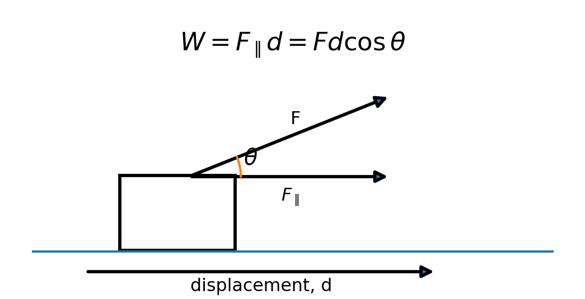
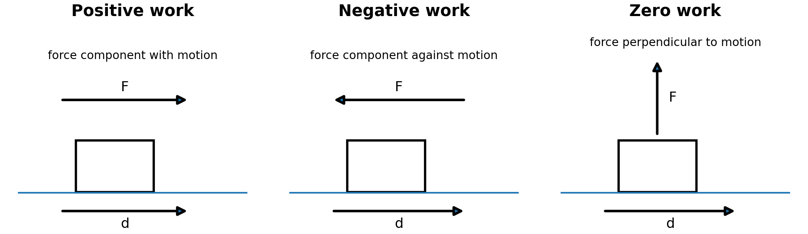
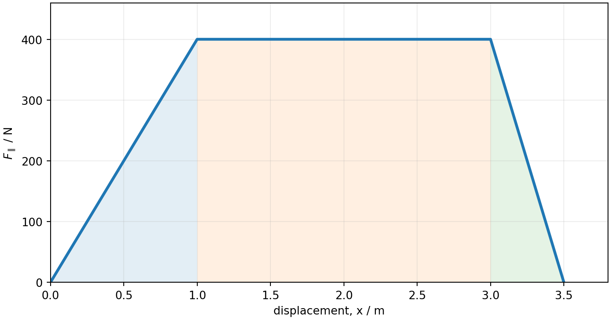
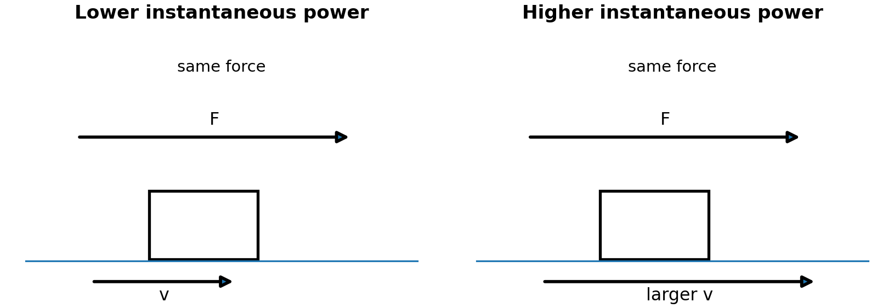

1. Work by a constant force
Work is energy transferred into or out of a system by a force acting through a displacement. Only the component of the force parallel to the displacement contributes.
θ is the angle between the force and displacement.

2. Positive, negative and zero work

Use the angle between force and displacement: cosθ > 0 → positive; cosθ < 0 → negative; cosθ = 0 → zero. Zero work also occurs if there is no displacement.
3. Net work and kinetic energy
The sum of the work done by all forces equals the change in translational kinetic energy.
K increases.
K decreases.
4. Variable force: use area
For a variable force, work equals the signed area under the F∥-versus-displacement graph.

Conservative vs nonconservative forces
Conservative-force work is path-independent and is associated with potential energy. Friction and air resistance are nonconservative; their work is path-dependent. Kinetic friction acting opposite motion does negative work on the moving object.
5. Power: rate of energy transfer

A constant force does not necessarily mean constant power. If the speed increases, the instantaneous power increases.
6. Quick check
Answer first. Then reveal the explanation.
Resources
Notes PDF · MC + FR practice · Worked solutions · Teacher slides